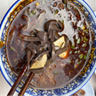
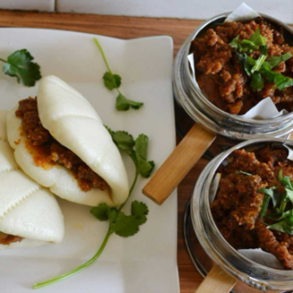
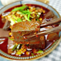

蜡汁肉夹馍
腊汁肉夹馍是陕西西安的标志性美食，更是 “三秦套餐”（肉夹馍 + 凉皮 + 冰峰汽水）的灵魂，承载着千年的饮食文化底蕴。其制作方法是选用带皮猪肋条肉或五花肉，搭配八角、桂皮、花椒、小茴香等十余种香料，加入老卤汤慢火煨炖数小时，直至肉质酥烂、肥而不腻、瘦而不柴。同时以中筋面粉制作白吉馍，经醒发、擀制、烙烤而成，成品馍体呈现 “铁圈虎背菊花心” 的形态，外皮焦脆、内瓤松软。食用时将腊汁肉剁成碎末，淋入少许卤汤，夹入刚出炉的白吉馍中，馍香肉酥、汁水饱满，一口下去肉香与面香交融，风味醇厚。
西安的腊汁肉夹馍，在历史传承中不断精进，借鉴了传统卤制技艺的精髓，却又在关中平原温润的气候与独特的饮食文化中，形成了独树一帜的风味。不同于其他地区的卤肉夹馍，西安腊汁肉以 “腊汁” 为魂，老卤汤代代相传、越陈越香，赋予了肉质独一无二的醇厚底味；白吉馍则坚持 “烙烤结合” 的古法，拒绝电烤速成，最大程度保留了面食的麦香与嚼劲。成品肉色红亮油润，馍体外酥内软，肉香、卤香、面香层层递进，入口肥而不腻、瘦而不柴，汤汁浸润馍芯却不软烂，每一口都是地道的关中风味，既保留了传统美食的纯粹本味，又承载着西安这座古城的烟火气息，成为无数人心中最具代表性的陕西味道。西安美食鉴赏

粉汤羊血
油泼面
擀面皮
卤汁凉粉

笼笼肉夹馍

辣子蒜羊血